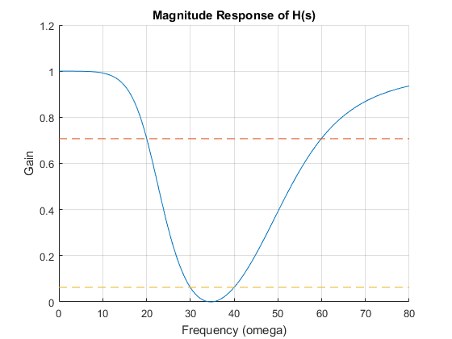
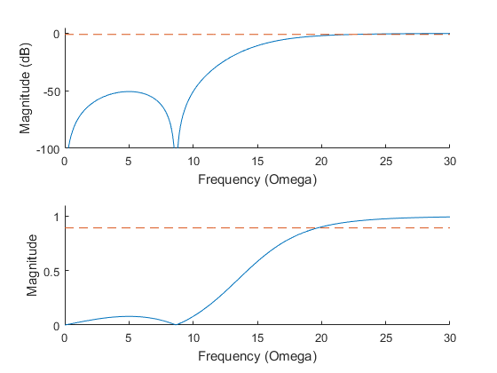
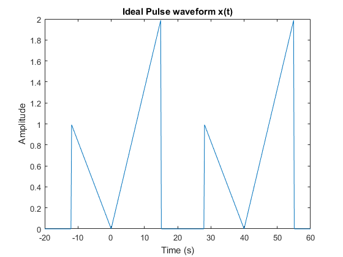
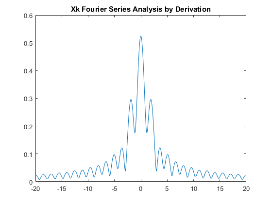
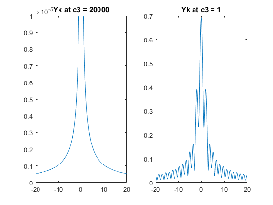

Contents
DSP Homework 3 Problem 1
K = 2;
omegac1 = 1.00347; k = 1:K;
pk1 = (1j*omegac1*exp(1j*pi/(2*K)*(2*k-1)));
A1 = poly(pk1);
omega1 = 0:.1:80;
Hbs1 = @(s) (s.^4 + 2400*s.^2 + 1.44*10^6)./(s.^4 + 56.3694*s.^3 + 3988.9*s.^2 + 67543.3*s + 1.44*10^6)
grid on
hold on
plot(omega1, abs(Hbs1(j*omega1)));
plot(omega1,.707*ones(size(omega1)),'LineStyle','--');
plot(omega1,.0631*ones(size(omega1)),'LineStyle','--');
title('Magnitude Response of H(s)');
xlabel('Frequency (omega)');
ylabel('Gain');
Hbs1 =
function_handle with value:
@(s)(s.^4+2400*s.^2+1.44*10^6)./(s.^4+56.3694*s.^3+3988.9*s.^2+67543.3*s+1.44*10^6)

DSP Homework 3 Problem 2
ap2 = 1; as2 = 22; wp2 = 20; ws2 = 10; wp0_2 = 1;
K = abs(ceil(acosh(sqrt((10^(as2/10)-1)/(10^(ap2/10)-1)))/acosh(ws2/wp2)));
ws0_2 = wp0_2*cosh(acosh(sqrt((10.^(as2/10) - 1)/(10.^(ap2/10) - 1)))/K);
ws0_2 = (1+ws0_2)./2
ws0_2 = 2;
E2 = 1./sqrt(10.^(as2/10) - 1);
k = 1:K;
pk2prime = - wp0_2*sinh(asinh(1/E2)/K)*sin(pi*(2*k-1)/(2*K))+...
j*wp0_2*cosh(asinh(1/E2)/K)*cos(pi*(2*k-1)/(2*K));
pk2 = wp0_2*ws0_2./pk2prime;
zk2 = j*ws0_2.*sec(pi*(2*k-1)/(2*K));
B2 = prod(pk2./zk2)*poly(zk2), A2 = poly(pk2)
Hs2proto = zpk(B2,A2,1)
pk2_trans = 20./pk2;
zk2_trans = 20./zk2;
B2trans = poly(zk2_trans), A2trans = poly(pk2_trans), ws2_trans = 20/ws0_2
Hs2 = zpk(B2trans,A2trans,1)
figure;
omega2 = 0:.1:30;
H2hp = (polyval(B2trans,j*omega2))./(polyval(A2trans,j*omega2));
subplot(2,1,1);
hold on
plot(omega2,20*log(abs(H2hp)));
plot(omega1,-1*ones(size(omega1)),'LineStyle','--');
axis([0 30 -100 5]);
xlabel('Frequency (Omega)');
ylabel('Magnitude (dB)');
hold off
subplot(2,1,2);
hold on
plot(omega2,abs(H2hp));
plot(omega1,.8913*ones(size(omega1)),'LineStyle','--');
axis([0 30 0 1.1]);
xlabel('Frequency (Omega)');
ylabel('Magnitude');
hold off
ws0_2 =
1.4849
B2 =
-0.0000 + 0.0000i 0.4781 + 0.0000i -0.0000 + 0.0000i 2.5499 + 0.0000i
A2 =
1.0000 + 0.0000i 2.6130 + 0.0000i 3.2996 + 0.0000i 2.5499 + 0.0000i
Warning: This zpk model has a complex gain or some complex zeros or poles that
do not come in conjugate pairs.
Hs2proto =
s^2 (s-0.4781) (s-2.55)
--------------------------------
(s-1) (s-2.55) (s-2.613) (s-3.3)
Continuous-time zero/pole/gain model.
B2trans =
1.0000 + 0.0000i 0.0000 + 0.0000i 75.0000 + 0.0000i 0.0000 + 0.0000i
A2trans =
1.0e+03 *
0.0010 + 0.0000i 0.0259 - 0.0000i 0.4099 + 0.0000i 3.1374 - 0.0000i
ws2_trans =
10
Warning: This zpk model has a complex gain or some complex zeros or poles that
do not come in conjugate pairs.
Hs2 =
s^2 (s-1) (s-75)
----------------------------------
(s-1) (s-25.88) (s-409.9) (s-3137)
Continuous-time zero/pole/gain model.

DSP Homework 3 Problem 5 Part a
A = 5;
B = 2;
T = 40;
t0 = -20:.1:60;
x = @(t) 0.*(heaviside(t+20)-heaviside(t+12)) + -t./(12).*(heaviside(t+12)-heaviside(t)) + ...
2*t/15.*(heaviside(t)-heaviside(t-15)) + 0.*(heaviside(t-15) - heaviside(t-20));
figure;
plot(t0, x(t0) + x(t0-40));
title('Ideal Pulse waveform x(t)');
xlabel('Time (s)');
ylabel('Amplitude');

DSP Homework 3 Problem 5 Part b, c, d
t = -.05:.0001:.05;
c1 = .4206
c2 = 1.319
c3 = 1;
K = [-20:.01:20];
omega0 = 2*pi/T;
Xk = @(K) 1./(T*omega0.^2 .*K.^2) .* (-1/(10+B) - 2/(10 + A) + (1/(10+B) - ...
j*omega0*K).*exp(j*omega0*K*(10+B)) + (2./(10+A) + 2*j*omega0*K).*...
exp(-j*omega0*K*(10 + A))) .*(K ~= 0) + 1/T.*((10+B)/2 + 10+A).*(K == 0);
figure;
plot(K, abs(Xk(K)));
title('Xk Fourier Series Analysis by Derivation');
c3 = 20000
omega0 = 20000*2*pi/T;
Xk = @(K) 1./(T*omega0.^2 .*K.^2) .* (-1/(10+B) - 2/(10 + A) + (1/(10+B) - ...
j*omega0*K).*exp(j*omega0*K*(10+B)) + (2./(10+A) + 2*j*omega0*K).*...
exp(-j*omega0*K*(10 + A))) .*(K ~= 0) + 1/T.*((10+B)/2 + 10+A).*(K == 0);
Yk = @(K) Xk(K).*c2.*(K ~= 0) + (c1 + c2.*Xk(K)).*(K == 0)
figure;
subplot(1,2,1)
plot(K, abs(Yk(K)));
title('Yk at c3 = 20000');
axis([-20 20 0 .00001]);
c3 = 1;
omega0 = c3*2*pi/T;
Xk = @(K) 1./(T*omega0.^2 .*K.^2) .* (-1/(10+B) - 2/(10 + A) + (1/(10+B) - ...
j*omega0*K).*exp(j*omega0*K*(10+B)) + (2./(10+A) + 2*j*omega0*K).*...
exp(-j*omega0*K*(10 + A)));
Xk0 = 1/T.*((10+B)/2 + (10+A));
Yk = @(K) Xk(K).*c2.*(K ~= 0);
Yk0 = (c1 + c2.*Xk0);
subplot(1,2,2);
plot(K, abs(Yk(K)));
title('Yk at c3 = 1');
yk = 0.*t;
yk = yk + (c1 + c2.*Xk0);
ykMag = zeros(10,1);
ykTheta = zeros(10,1);
figure;
for K = 1:10
ak = real(Yk(K));
bk = -imag(Yk(K));
ykMag(K) = sqrt(ak^2 + bk^2);
ykTheta(K) = atan2(-bk,ak);
yk = yk + ykMag(K).*cos(1000*omega0*K*t + ykTheta(K));
fprintf('K=%i, ykmin=%d, ykmax=%d\n', K, min(yk), max(yk));
plot(t, abs(yk));
hold on
end
title('yk Fourier synthesis');
xlabel('Time');
ykMag
ykTheta
c1 =
0.4206
c2 =
1.3190
c3 =
20000
Yk =
function_handle with value:
@(K)Xk(K).*c2.*(K~=0)+(c1+c2.*Xk(K)).*(K==0)
K=1, ykmin=8.567261e-01, ykmax=1.369424e+00
K=2, ykmin=6.277263e-01, ykmax=1.740914e+00
K=3, ykmin=6.065137e-01, ykmax=1.779651e+00
K=4, ykmin=6.726098e-01, ykmax=1.879672e+00
K=5, ykmin=6.493260e-01, ykmax=1.945712e+00
K=6, ykmin=6.308818e-01, ykmax=1.949272e+00
K=7, ykmin=6.638371e-01, ykmax=2.001372e+00
K=8, ykmin=6.524190e-01, ykmax=2.026034e+00
K=9, ykmin=6.361764e-01, ykmax=2.022228e+00
K=10, ykmin=6.599158e-01, ykmax=2.056375e+00
ykMag =
0.2564
0.3836
0.0540
0.1168
0.1276
0.0350
0.0702
0.0757
0.0291
0.0478
ykTheta =
-1.3882
2.8423
0.4013
-1.3741
2.1551
-0.5633
-2.0350
1.4080
-1.3896
-2.7280
 
Homework 3 Problem 5 Part e
f = c3/40;
sumval = (c1 + c2.*Xk0);
K = 10;
figure;
for t = 0:.0001:.006
for k = 1:K
sumval = ykMag(k)*cos((k)*20000*omega0*t + ykTheta(k)) + sumval;
end
valDAC = sumval*4095/3;
stem(t,abs(valDAC));
hold on
end
title('Fourier Synthesis K22F Simulation');
xlabel('Time (s)');
ylabel('DAC Samples');